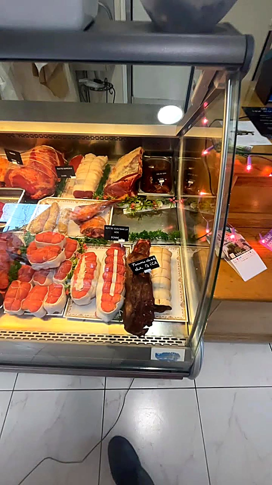
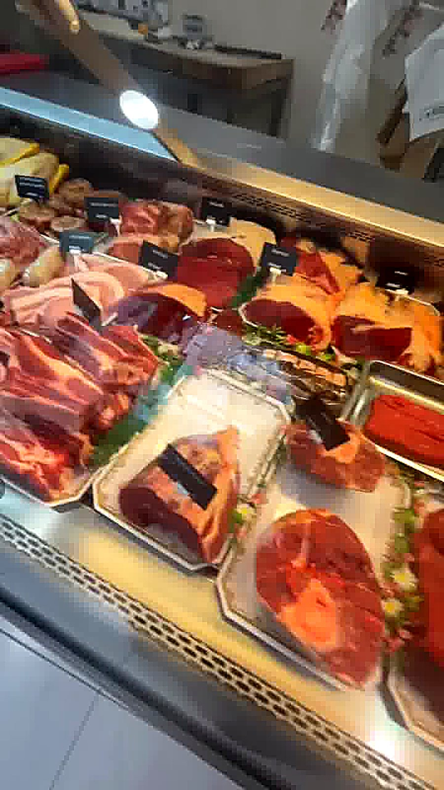
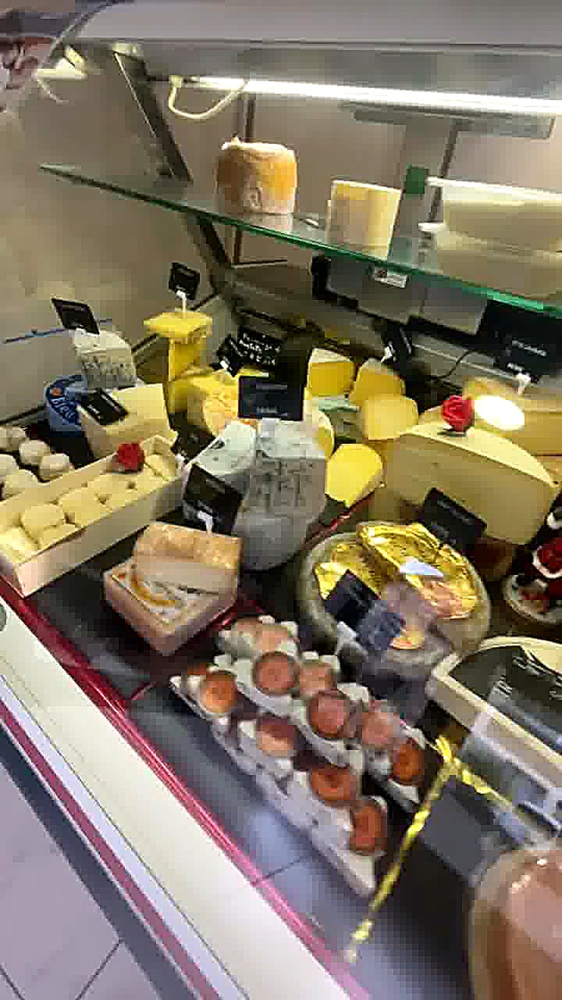

« Une boucherie comme on les aime : produits de qualité, viande toujours fraîche et de précieux conseils pour bien choisir sa pièce. »
Boucherie-charcuterie artisanale • Massat, Ariège
Boucherie Ulysse & Sandrine
Viandes locales, charcuterie maison et plats traiteur préparés avec passion, au cœur du Couserans.
Ouvert maintenant
Produits locaux & faits maison
- Viande fraîche sélectionnée
- Charcuterie faite maison
- Conseils de nos artisans

Notre histoire
Une boucherie-charcuterie familiale au cœur de Massat
La Boucherie Ulysse & Sandrine est née de la passion de deux artisans pour le métier de boucher-charcutier. Chaque jour, nous sélectionnons nos viandes auprès de producteurs locaux et préparons sur place notre charcuterie : pâtés, terrines, saucissons et jambons faits maison, dans la plus pure tradition du Couserans.
Que vous veniez pour le repas du dimanche, une commande de fête ou simplement un conseil sur la cuisson d'une pièce, vous retrouverez toujours le même accueil chaleureux et le même savoir-faire artisanal.
- Viandes locales sélectionnées avec soin
- Charcuterie & plats préparés faits maison
- Conseils personnalisés de nos artisans bouchers
- Accueil familial et chaleureux
Pourquoi nous choisir
Un savoir-faire artisanal à votre service
Viandes fraîches & locales
Bœuf, porc, agneau et volaille sélectionnés chez des producteurs de la région.
Charcuterie artisanale maison
Pâtés, terrines, saucissons et jambons préparés sur place chaque semaine.
Traiteur & plats cuisinés
Des plats prêts à réchauffer, parfaits pour les repas de famille et événements.
Fromages & épicerie fine
Une sélection de fromages affinés, vins et produits du terroir ariégeois.
Conseils & découpe sur mesure
Nos artisans bouchers vous conseillent et préparent vos pièces à la demande.
Commandes pour vos événements
Fêtes de fin d'année, repas de famille : nous préparons votre commande sur mesure.
Simple & rapide
Commander en 3 étapes
Viande fraîche, charcuterie maison ou plats traiteur : votre commande prête à l'heure souhaitée.
1
Choisissez vos produits
Parcourez notre sélection de viandes, charcuterie maison et plats préparés.
Voir nos produits2
Appelez ou passez en boutique
Passez commande par téléphone ou venez directement nous voir en boutique.
Appeler la boucherie3
Récupérez votre commande
Retirez votre commande en boutique, prête à l'heure souhaitée.
Nous trouverGalerie
Un avant-goût de notre boutique
Survolez une photo (ou touchez-la sur mobile) pour l'effet 3D.






Avis clients
Ce que nos clients en pensent
« La charcuterie maison est excellente, en particulier le pâté de campagne. On y retourne chaque semaine ! »
« Accueil chaleureux et familial, on sent vraiment la passion du métier. Parfait pour les commandes de fêtes. »
« Boucherie incontournable à Massat, toujours de bons produits locaux et un service impeccable. »
Infos pratiques
Tout savoir avant de venir
Horaires d'ouverture
Horaires à titre indicatif — à confirmer par téléphone.
Notre savoir-faire
Ambiance & clientèle
Accès & parking
Contact & commandes
Venez nous rendre visite
- 188 Rue de la Montagne, 09320 Massat
- 09 56 08 85 86
- contact@boucherie-ulysse-sandrine.fr